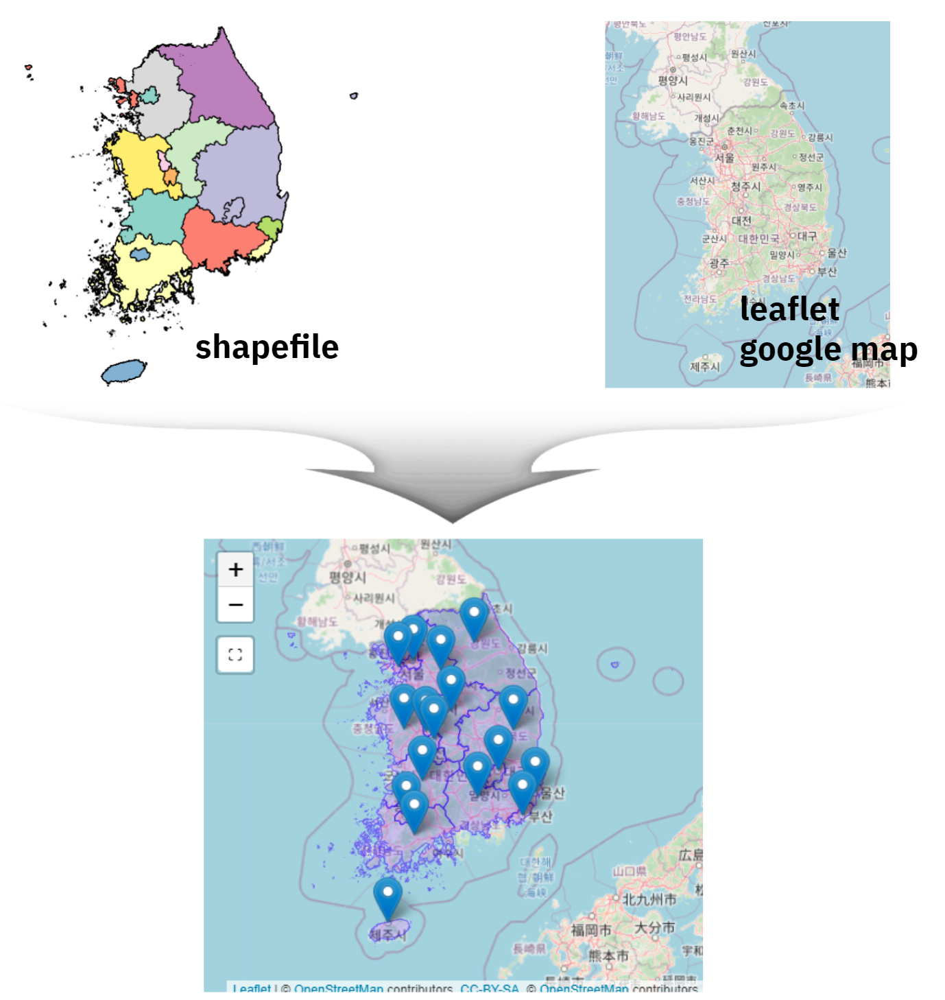
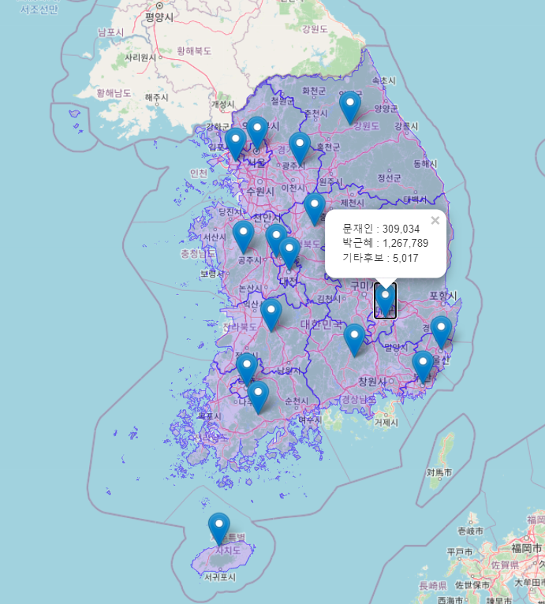

3 shapefile을 leaflet 결합

3.1 leaflet 위에 shapefile 오류1
대한민국 최신 행정구역(SHP) 다운로드를 다운로드 받아 leaflet과 같은 지도위에 올릴려고 하면 bounding box has potentially an invalid value range for longlat data와 같은 오류가 생겨 실행이 되지 않는 것은 기본이고 shapefile 지도와 기반 leaflet 지도가 별도로 표기되어 원하는 결과를 얻을 수가 없다.
library(tidyverse)
library(leaflet)
library(sf)
sido_sf_raw <- sf::read_sf("data/map/CTPRVN_201311/TL_SCCO_CTPRVN.shp")
sido_sf <- sido_sf_raw %>%
mutate(시도명 = iconv(CTP_KOR_NM, from = "CP949", to = "UTF-8", toRaw = FALSE)) %>%
dplyr::select(-CTP_KOR_NM, -CTP_ENG_NM)
sido_sf %>%
st_set_crs(4235) %>%
leaflet() %>%
addTiles() %>%
setView(lng=127.7669, lat=35.90776, zoom=6) %>%
addProviderTiles(providers$OpenStreetMap) %>%
addPolygons(weight = 1,col = 'blue')
1: In sf::st_is_longlat(x) :
bounding box has potentially an invalid value range for longlat data
2: sf layer has inconsistent datum (+proj=longlat +ellps=intl +towgs84=-186,230,110,0,0,0,0 +no_defs).
Need '+proj=longlat +datum=WGS84' 문제의 원인은 대한민국 최신 행정구역(SHP) 다운로드에 포함된 좌표계와 leaflet 지도와 좌표계가 달라 생기는 문제라 이를 맞춰주면 된다.
대한민국 최신 행정구역(SHP) 지도는 KATEC 계열로 네이버지도에서 사용중인 좌표계 UTM-K (GRS80) 인데, leaflet 에서 요구하는 좌표계는 전지구 좌표계로 GPS가 사용하는 좌표계 WGS84 경위도이다. 이를 맞춰주면 정상적인 결과를 얻을 수 있다.
sido_sf_raw <- sf::read_sf("data/map/CTPRVN_201311/TL_SCCO_CTPRVN.shp")
from_crs <- "+proj=tmerc +lat_0=38 +lon_0=127.5 +k=0.9996 +x_0=1000000 +y_0=2000000 +ellps=GRS80 +units=m +no_defs"
to_crs <- "+proj=longlat +ellps=WGS84 +datum=WGS84 +no_defs"
sido_sf <- sido_sf_raw %>%
mutate(시도명 = iconv(CTP_KOR_NM, from = "CP949", to = "UTF-8", toRaw = FALSE)) %>%
dplyr::select(-CTP_KOR_NM, -CTP_ENG_NM) %>%
st_set_crs(from_crs) %>%
st_transform(to_crs)
sido_sf %>%
leaflet() %>%
addTiles() %>%
setView(lng=127.7669, lat=35.90776, zoom=6) %>%
addProviderTiles(providers$OpenStreetMap) %>%
addMarkers(lng=~lon, lat=~lat, popup=~득표) %>%
addPolygons(weight = 1,col = 'blue')